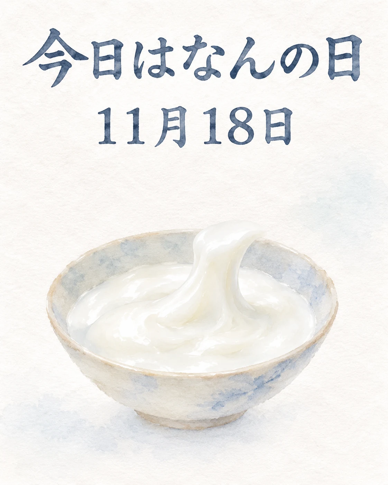

11月18日は「カスピ海ヨーグルトの日」です🥣
フジッコが2007年に制定した記念日。手づくり用種菌の頒布数が100万セットを突破した日を記念して、11月18日とされました。
とろりとした粘りと、穏やかな酸味が特徴のカスピ海ヨーグルト。味噌や醤油、日本酒と同じく、微生物の働きが食材の味わいや質感を変える発酵食品です。それぞれ異なる発酵の仕組みに思いを向けると、日々の食卓も少し豊かに感じられますね。
季節の味わいとともに、心ほどけるひとときをお過ごしください✨
微生物が育む、食の楽しみ
毎年11月18日の記念日で、2026年は水曜日です。フジッコ公式ヒストリーは、2005年11月に手づくり用種菌の頒布数が100万セットを突破し、2007年10月に記念日を制定したと説明しています。日本記念日協会の当日一覧でも名称と日付を確認できます。
和食に欠かせない味噌・醤油や日本酒と、乳酸菌によるヨーグルトは、使う微生物も製法も異なります。発酵が生む風味や質感を楽しむ、という視点でご紹介します。当店の当日の提供・仕入れをお知らせするものではありません。
出典：フジッコ「カスピ海ヨーグルト」ヒストリー、日本記念日協会・11月18日一覧、フジッコ公式発表（2013年9月25日）（2026年11月18日確認）。